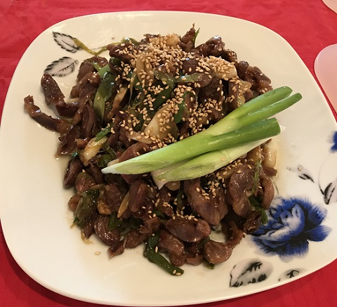

닭똥집 볶음
닭똥집을 양파, 마늘 등과 같은 갖은 채소와 함께 볶아낸 음식.
닭모래집볶음이라고도 한다. 닭똥집은 닭의 소화기관인 모래주머니, 즉 닭의 위 중에서도 ‘근위’ 부분을 뜻한다. 닭은 이빨이 없기 때문에 먹이를 모래주머니에서 직접적으로 소화시키는데, 소화 과정에서 많은 운동이 일어나다보니 모래주머니의 근육이 특히 발달하여 식감이 단단하고 쫀득하다. 닭똥집은 씹을수록 고소하고 담백한 맛이 나므로, 고유의 식감을 살릴 수 있는 구이나 볶음으로 조리하여 먹는 것이 보통이다. 닭똥집볶음은 야채와 함께 조리하기 때문에 잡냄새가 나지 않고 내장 부위를 잘 먹지 않는 이들도 손쉽게 즐길 수 있다. 특히 술안주로 인기가 많다.
